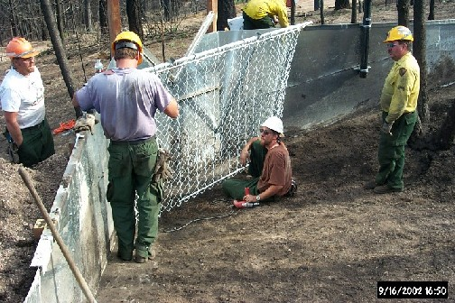
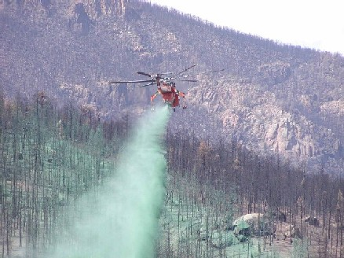

BAER
Treatment Monitoring Sites
Hayman Site -- Pike/San Isabel National Forest
Hayman paired watershed monitoring sites, Pike/San Isabel NF, Colorado
Hayman site pictures -
Hayman site collection area

Hayman site collection area

Hayman site collection area
Hayman Fire Case Study Analysis
Questions? Contact
Bob Brown
.
Project Leader Bill Elliot
USDA Forest Service
Rocky Mountain Research Station
Moscow, ID 83843
For page issues, Contact the
Webmaster